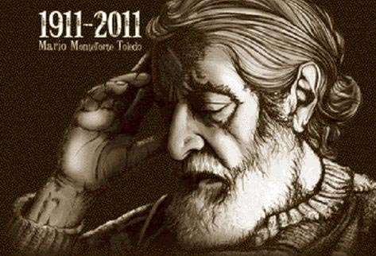
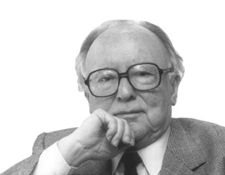
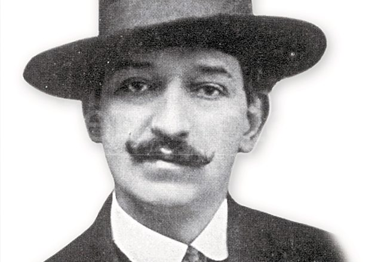

Miguel Ángel Asturias
(Guatemala, 1899 - París, 1974) Poeta, narrador, dramaturgo, periodista y diplomático guatemalteco considerado uno de los protagonistas de la literatura hispanoamericana del siglo XX. Precursor de la renovación de las técnicas narrativas y del realismo mágico que cristalizaría en el posterior «Boom» de la literatura hispanoamericana de los años 60, con su personalísimo empleo de la lengua castellana construyó uno de los mundos verbales más densos, sugerentes y dignos de estudio de las letras hispánicas.

Mario Monteforte Toledo
Nació en Guatemala, el 15 de septiembre de 1911; murió el 4 de septiembre de 2003. Narrador y poeta. Radicó en México desde 1956. Estudió Ciencias Políticas y Sociales en la usac de Guatemala. Fue profesor de la fcpys e investigador del Instituto de Investigaciones Sociales de la unam; redactor de Siempre!. Premio Farrar y Rinehart 1939. Premio Nacional de Guatemala 1940. Premio Centroamericano “15 de Septiembre” 1947. Premio de la Unión Latinoamericana de Universidades 1954.

Augusto Monterroso
(Tegucigalpa, Honduras, 1921 - Ciudad de México, 2003) Escritor guatemalteco, uno de los autores latinoamericanos más reconocidos a nivel internacional. Aunque nacido en Honduras, Augusto Monterroso era hijo de padre guatemalteco y optó por esta nacionalidad al llegar a su mayoría de edad. Participó en la lucha popular que derrocó a la dictadura de Jorge Ubico y posteriormente hubo de exiliarse. Con un paréntesis en Guatemala y algún destino diplomático, vivió desde 1944 en México, donde trabajó en la UNAM y, como traductor, en el Fondo de Cultura Económica.

Enrique Gómez Carrillo
(Guatemala, 1873 - París, 1927) Escritor guatemalteco. Vivió algún tiempo de su infancia en Santa Tecla (El Salvador) y la mayor parte de su existencia en París, adonde llegó en 1891; pero realizó viajes a España y a otros países, incluso a Guatemala, donde estuvo en 1898 y apoyó la candidatura de Manuel Estrada Cabrera. Su agitada vida (podría también hablarse de su agitada vida literaria) lo retrata unas veces como un bohemio y otras como un aventurero, pero sin perder nunca cierto sentido rector que le permitiría siempre administrarse.